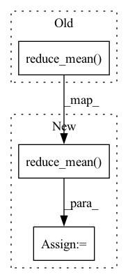

Pattern ID :21369
Before Change
ipts_jac_trace_approx.append(tf.reduce_mean(trace_jv)) // Get averaged jacobian trace approximation
outputs_jacobians_approx.append(ipts_jac_trace_approx) // Get mean of jacobians of all model"s outputs
return _normalize_weights(tf.reduce_mean( outputs_jacobians_approx, axis=0) , all_outputs_indices, alpha)
def _model_outputs_computation(graph_float: common.Graph,After Change
ipts_jac_trace_approx.append(tf.sqrt(tf.reduce_mean(trace_jv))) // Get averaged squared jacobian trace approximation
outputs_jacobians_approx.append(ipts_jac_trace_approx)
mean_per_point = tf.reduce_mean( outputs_jacobians_approx, axis=0) // Get mean of jacobian approx of all model outputs
if norm_weights:
return _normalize_weights(mean_per_point, all_outputs_indices, alpha)
else:In pattern: SUPERPATTERN
Frequency: 3
Non-data size: 3
Instances Fragment ID: 68193577
Project Name: sony/model_optimization
Commit Name: 63ab7c6eb23382998914ee42eb4852d6ccf0eec6
Time: 2022-08-03
Author: ofirg6@gmail.com
File Name: model_compression_toolkit/core/keras/back2framework/model_gradients.py
M Class Name: AnonimousClass
N Class Name: AnonimousClass
M Method Name: keras_iterative_approx_jacobian_trace(8)
N Method Name: keras_iterative_approx_jacobian_trace(7)
M Parent Class:
N Parent Class:
M File Name: model_compression_toolkit/core/keras/back2framework/model_gradients.py
N File Name: model_compression_toolkit/core/keras/back2framework/model_gradients.py
M Start Line: 134
M End Line: 155
N Start Line: 104
N End Line: 163
Before Change
loss = tf.nn.sparse_softmax_cross_entropy_with_logits(labels, probs)
acc = tf.keras.metrics.sparse_categorical_accuracy(labels, probs)
auc = tf.keras.metrics.AUC()
auc.update_state(labels, tf.reduce_mean( probs,1) )
return loss, acc, auc.result().numpy()
def run_dummy_input(self):After Change
labels = tf.cast(labels, "float32")
loss = -labels * tf.math.log(probs + 1e-9) - (1.0 - labels) * tf.math.log(1.0 - probs + 1e-9)
loss = tf.reduce_mean( loss)
pred_labels = tf.round(probs)
acc = tf.reduce_mean(tf.cast(tf.math.equal(pred_labels, labels), "float32"))
auc = tf.keras.metrics.AUC() Fragment ID: 68193579
Project Name: ppashakhanloo/codetrek
Commit Name: ab7f50274c73fdd98a31d27ad077348953495657
Time: 2021-07-07
Author: ppashakhanloo@gmail.com
File Name: data_prep/baselines/GREAT/running/meta_model.py
M Class Name: DefuseProgModel
N Class Name: DefuseProgModel
M Method Name: get_loss(4)
N Method Name: get_loss(6)
M Parent Class: tf.keras.layers.Layer
N Parent Class: tf.keras.layers.Layer
M File Name: data_prep/baselines/GREAT/running/meta_model.py
N File Name: data_prep/baselines/GREAT/running/meta_model.py
M Start Line: 61
M End Line: 68
N Start Line: 56
N End Line: 65
Before Change
if self.label_smoothing > 0:
class_true_valid = class_true_valid * (1.0 - self.label_smoothing) + 0.5 * self.label_smoothing
// TODO Use focal_loss if gamma > 0
class_loss = tf.reduce_mean( K.binary_crossentropy(class_true_valid, class_pred_valid))
// Calulate accuracy here, will use it in metrics
self.class_acc.assign(tf.reduce_mean(tf.cast(tf.argmax(class_pred_valid, axis=-1) == tf.argmax(class_true_valid, axis=-1), "float32")))
After Change
// tobj[b, a, gj, gi] = (1.0 - model.gr) + model.gr * iou.detach().clamp(0).type(tobj.dtype) // iou ratio, gr = 1.0
object_true = tf.tensor_scatter_nd_update(tf.zeros_like(y_pred[:, :, -1]), valid_pick, tf.maximum(iou, 0))
object_loss = tf.losses.binary_crossentropy(object_true, y_pred[:, :, -1])
object_loss = tf.reduce_mean( object_loss * self.object_level_weights) * self.loss_scale
class_true_valid, class_pred_valid = y_true_valid[:, 4:-1], y_pred_valid[:, 4:-1]
// if self.label_smoothing > 0: Fragment ID: 68193580
Project Name: leondgarse/keras_cv_attention_models
Commit Name: 6da31bf1397ecf13cf2d674fc20b9e7af3c6061b
Time: 2022-03-27
Author: leondgarse@gmail.com
File Name: keras_cv_attention_models/coco/losses.py
M Class Name: YOLORLossWithBbox
N Class Name: YOLORLossWithBbox
M Method Name: call(3)
N Method Name: call(3)
M Parent Class: tf.keras.losses.Loss
N Parent Class: tf.keras.losses.Loss
M File Name: keras_cv_attention_models/coco/losses.py
N File Name: keras_cv_attention_models/coco/losses.py
M Start Line: 331
M End Line: 352
N Start Line: 331
N End Line: 357